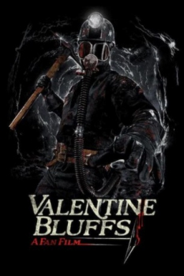

Country:United States, 90 minutes
Spoken languages:English
Genres:Horror
Director(s):
Writer(s):
Video Codec:Unknown
Number: 2660


Certification:
Storyline:
After the horrific events that took place in Valentine Bluffs, TJ and Sara struggle to move on with their lives in a new town. Circumstances force TJ to move back to his hometown, where he tries to start a new life. 40 years pass, and the town of Valentine Bluffs has forgotten the names of Axel Palmer and Harry Warden. The next generation is getting ready to celebrate the big Valentine's Day dance. All seems well, until an ominous figure wielding a pick axe appears, leaving a trail of carnage behind.
Cast:


Medium: Bluray,
Loaned: No
Aspect ratio: Unknown